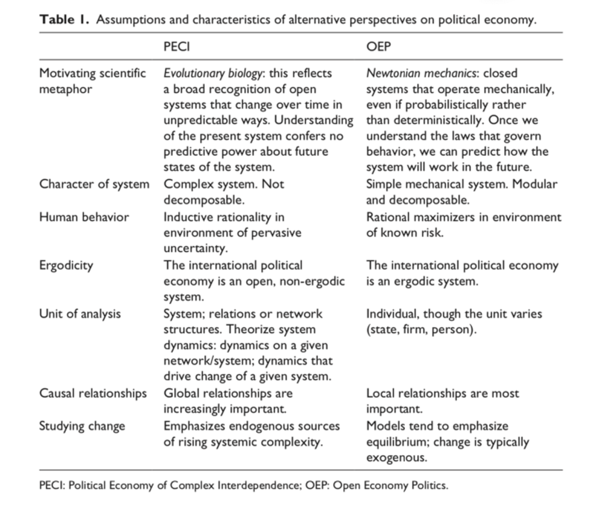

收录于合集
#比较政治学 121 个
#政治经济学 1 个
文献来源：
Thomas Oatley, “Toward a Political Economy of Complex interdependence,” European Journal of International Relations , Vol. 25, No. 4, 2019, pp. 1-22.
作者简介：
Thomas Oatley ，美国杜兰大学（Tulane University）政治学系教授。
摘要： 在复杂相互依赖的时代我们如何将国际政治经济学（IPE）理论化？当下世界经济的相互依赖远比40年前更加复杂深刻，因此我们需要更新对复杂相互依赖如何产生、运作和发展的理论。为此，一种能够覆盖和解释现实变化的理论逻辑显得尤为重要。借鉴复杂性科学、生态学以及信息理论，本文先阐释这种复杂系统的要件以及与开放经济政治学（OEP）进行对比。而运用这种基于协同进化和信息熵的复杂系统思维和信息的研究路径可以解释2008年全球金融危机中的关键要素。
导论
国际关系理论传统上将相互依赖视为跨境货物、服务、资金和人员流动带来国家间具有高昂成本的联通性。尽管这种成本高昂的联通性指出了相互依赖的的重要特征，但这种联通性还是未能充分凸显出真正的相互依赖，因为这种依赖实质上是结构性的。观察当下全球金融的相互依赖，其具有很强的等级制结构。在这个等级制的系统中，少数国家占据了全球金融的中心吸引并调节着全世界资金的流向，而与中心国家相连的多数国家之间联系较少；此外，这种等级制系统还具有一定的惯性，能够不断延续；最后，这种延续性的等级制系统内部的异质性不断增长，如部分国家的金融制度催生了全球性的银行而有些国家的金融制度关注国内的商业、有些国家成为了全球或区域的金融中心而有些国家却没有。因此，复杂相互依赖正在塑造全球金融和政治经济体系，不同层次的各类行为主体也正在融入全球金融系统。这种复杂相互依赖使得国内——国际的划分难以为继，单一行为主体也不能与其他行为主体分离。
无论是对全球金融系统还是IPE研究而言，复杂相互依赖的存在亟需寻求新的理论。现有的IPE理论，特别是OEP理论都是基于行为者偏好以及行为者在特定系统的参数限制中互动,却存在难以解释系统行为即系统变迁的短板而在当下复杂相互依赖的情景中捉襟见肘。为此，要理解全球性的相互依赖，一种超越美国式IPE和国际关系研究中“国家中心”框架的理论成为必需。
为引出新的理论，本文借鉴来自进化逻辑的复杂性科学（complexity science），减少对传统牛顿力学机制的依赖。复杂性科学强调社会系统的可塑性，包括“生活”在系统中的行为体特质、多个行为体间互动的特征、行为体互动形成的结构以及行为体互动带来的持续性结果。总之，这种社会系统的核心特征就是系统中行为体的类型、系统如何被构成、系统如何运行以及作为行为体长期互动结果的进化。
复杂相互依赖政治经济学（PECI）的核心要素
复杂性科学设计范围广泛但是具有三点核心要义：第一，同“多者异也”一道，高层级的实体不只是低层级实体的累加；第二，社会系统的变迁同行为主体、信息和环境的协同进化一起发生：行为主体在特殊的环境中具备相应的特征，环境也会随着行为主体的学习过程而变化；第三，社会系统是不确定的和不可预测的，因为社会系统包含了巨大的可能性空间而这些可能性空间也在不断变化。
//相比于OPE，由复杂性科学而来的PECI表现出三种维度
首先，PECI将全球政治经济概念化为复杂系统。这种“复杂”比以往IPE中了以往标准线形、可加的因果机制的“复杂”更加广泛。在这种意义上，我们可以把这种复杂性描述为一个系统产生令人惊讶的事件的能力
即使是对系统有充分了解的观察者也没有想到的结果。系统可以非常庞杂（complicated），但却没有丝毫的复杂性（complex），如机械系统具有许多可分割部分而庞杂但是却不会产生意外，因而不能成为复杂系统；但是，金融市场和宏观经济却不然，因为其内部具有高度不确定性，如果说全球政治经济是一个复杂的系统，就是断言它是一个延伸到社会内部并跨越社会的关系结构，其动态特征会产生意想不到的结果。OPE则将社会系统视为牛顿式的机械系统，其中的各个部分组装成了整体且各个部分可以分离开来，形成一种模块化的理论。
其次，PECI假定人类具有目的性但是不能追求最优行动策略。一方面，体系中其他行为体行动会增加系统的不确定性；另一方面，受制于认知局限，行为体不能判定和实施最优策略，相反只能求助于不间断的探索和社会文化进行决策。鉴于这些因素，PECI关注于行为体的适应行为。而OEP未关注到结构中行为体互动的发生，因而其对于行为体的行动后果十分确定。[srpku1] 主流的OEP研究通常假定，在理性行为者模型下，偏离理想化的情况得以出现，是个体的心理特征导致的，而不是因为复杂系统中动态相互依赖所产生的复杂性。
最后，PECI假定全球政治经济具有非遍历性，是随着时间而不断变迁的。在非遍历体系中，并不存在全球范围上的稳定均衡布局；作为一种特定历史状态的体现，非遍历的随机性是一个向特定分配格局渐进的过程。在全球政治经济中，系统中行为体适应性互动产生的分配格局也随着时间变化。相反，OEP则假定全球政治经济是遍历性的，这起源于其对新古典经济学的追随。
// 核心要素的含义
PECI对相互依赖理论化具有一定含义：
第一，在PECI中，系统才是分析的单元。PECI认为现实现象由行为体间关系的结构和行为体之间的互动所塑造，这并非由特定行为体引发。对待制度、规则以及机制这类影响利益分配的安排，PECI认为应该将其置于行为体之间的互动中进行观察，因此有必要了解全球政治经济如何组织起来、国际制度如何塑造系统的走势以及系统如何变迁等议题。OEP由于将个人和国家作为分析单元，聚焦于对外政策的国内因素以及国家经济政策偏好的起源问题，因而很少关注国际系统。
第二，PECI承认地方经济后果的出现往往有着全球性的原因，这需要探寻系统动态特征所产生的因果关系。OEP则认为现象得以产生，往往可以归因为与其相近的因素，因此OEP的多数研究既在同一分析层次上探寻因果机制，也在同一议题领域内部寻找。
第三，PECI追求对系统变迁的理论化。总体上看，PECI热衷于将全球政治经济中系统性的结构和行为特征的变化进行理论化。OPE由于认为系统具有遍历性便较少探寻系统性的变化而致力于因果机制的识别，进而将系统性的变化视为社会和政治对外生冲击进行反应的结果。

PECI与美国次贷危机
由于次贷危机发生于当代的全球金融相互依赖中，也对于全球金融市场具有非凡的意义，因此本文选择次贷危机作为案例并观察其中金融创新和金融规则的协同进化。作为抵押证券化的产物，担保债务凭证的出现、流行以及崩塌成为次贷危机的见证。担保债务凭证是一种管控风险的制度和工具，自2000以来随着其产生的正面效应在金融系统中广受好评，成为了有效管控风险的模式和机制。但是，金融市场中的协同进化也会发生。原有担保债务凭证的信息被用于谋利：在抵押证券化离不开资产价格相关性的背景下，市场参与者、信用评级机构、监管部门严重依赖于原有的资产价格相关性。然而，美国国内的监管环境却阻碍了全国不动产市场的发展，致使现有的资产价格不同于原有的。于是，监管部门和市场参与者难以获取实时的市场信息，进而次贷危机得以发生。
结论：复杂系统的认识论
将系统作为研究单元可以看到不同全球政治经济的不同表现形式，亦可对研究IPE产生三点认识论的启示：要对全球政治经济产生新的知识需要拥有一种整体主义的认识论，应该把全球政治经济视为系统、采取生态系统的视角而非采取独立的视角；由于全球政治经济是一个复杂适应系统，因此IPE研究应该注重历史科学而非实验科学，即要注重解释事件而非检验假设；最后，不得不承认，我们关于社会系统的研究具有局限，毕竟社会科学研究自身也存在信息熵周期。
编译：卓晔 审校：施榕 编辑：韩丽嵘